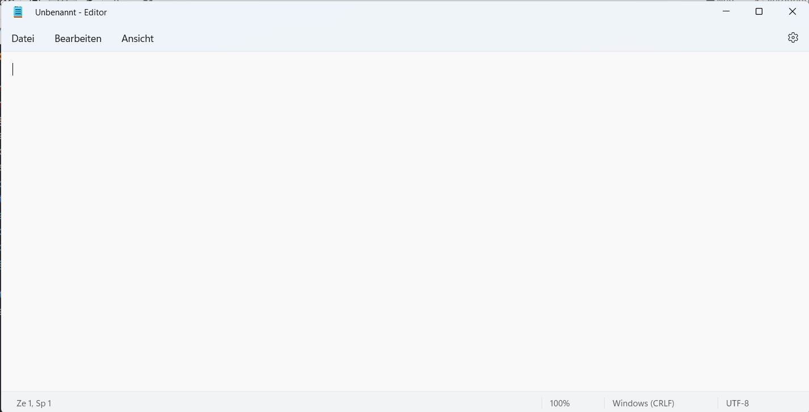

Microsoft Windows
Microsoft Windows#
The Windows operating system has then emerged as a graphical user interface (GUI) on top of DOS. In its early versions, it was a graphical file manager, but the most important innovation was available with Windows 3.x, namely, an interaction scheme in which the graphical screen is subdivided into rectangular Windows with the following properties
Windows can overlap each other
Exactly one Window is active
The active Window is in the front (fully visible)
Windows can be resized and moved on the screen
Windows provide buttons for minimizing, maximizing and closing the Window
In fact, a Window today looks like this editor window from the integrated Windows Editor Notepad:

Windows typically have more standardized aspects such as the following ones. Each Window has a Title line which contains an optional Icon (which is a menu) followed by a text (the Window title) and the three buttons on the right for minimizing, maximizing and closing the Window. Below the Title, a menu bar is located in which multiple text fields are displayed. When you click on them, a window is opened and can be navigated to send a command to the application. The bottom line (optional) is known as a status line and typically contains a few controls, at least one text. The remainder is called the Client Area and is used by the application.
In order to give you a more in-depth understanding, let us look at the principle of writing programs for MS Windows. A normal program is started, this one asks the Operating System to open a window with certain properties (size, location, etc.). One of these properties is a function which is then called by the operating system with events such as the following ones:
WM_CREATE: Is sent when the Window is created
WM_DESTROY: The window is destroyed
WM_MOVE: The location has changed
WM_SIZE: The size has changed
WM_ACTIVATE: The window has become active
WM_QUIT: The X has been clicked (or an equivalent hotkey was activated)
WM_PAINT: Draw the client area (however this is done)
Without expecting everyone to understand completely at the first time you read this article, here is a complete Windows API example drawing a rectangle. It is written in the C language we will learn, and serves as a primary example. It has been made available at Github and is referenced by the MSDN as well MSDN Article on WM_PAINT
#ifndef UNICODE
#define UNICODE
#endif
#include <windows.h>
LRESULT CALLBACK WindowProc(HWND hwnd, UINT uMsg, WPARAM wParam, LPARAM lParam);
int WINAPI wWinMain(HINSTANCE hInstance, HINSTANCE, PWSTR pCmdLine, int nCmdShow)
{
// Register the window class.
const wchar_t CLASS_NAME[] = L"Sample Window Class";
WNDCLASS wc = { };
wc.lpfnWndProc = WindowProc;
wc.hInstance = hInstance;
wc.lpszClassName = CLASS_NAME;
RegisterClass(&wc);
// Create the window.
HWND hwnd = CreateWindowEx(
0, // Optional window styles.
CLASS_NAME, // Window class
L"Learn to Program Windows", // Window text
WS_OVERLAPPEDWINDOW, // Window style
// Size and position
CW_USEDEFAULT, CW_USEDEFAULT, CW_USEDEFAULT, CW_USEDEFAULT,
NULL, // Parent window
NULL, // Menu
hInstance, // Instance handle
NULL // Additional application data
);
if (hwnd == NULL)
{
return 0;
}
ShowWindow(hwnd, nCmdShow);
// Run the message loop.
MSG msg = { };
while (GetMessage(&msg, NULL, 0, 0))
{
TranslateMessage(&msg);
DispatchMessage(&msg);
}
return 0;
}
LRESULT CALLBACK WindowProc(HWND hwnd, UINT uMsg, WPARAM wParam, LPARAM lParam)
{
switch (uMsg)
{
case WM_DESTROY:
PostQuitMessage(0);
return 0;
case WM_PAINT:
{
PAINTSTRUCT ps;
HDC hdc = BeginPaint(hwnd, &ps);
// All painting occurs here, between BeginPaint and EndPaint.
FillRect(hdc, &ps.rcPaint, (HBRUSH) (COLOR_WINDOW+1));
EndPaint(hwnd, &ps);
}
return 0;
}
return DefWindowProc(hwnd, uMsg, wParam, lParam);
}
This very clearly illustrates what is happening: The program creates a new Window which refers to a function in our program (WindowProc) and this function is called by ourselves with all messages we can Peek and Dispatch in our main program.
The nature of an event-driven system is that after a lot of initialization, the main progress of the system follows an event-driven nature: an ordered sequence of information (called events) will dictate the behaviour.
By the way, this is also the core reason why sometimes windows are hanging and not reacting: This happens, when messages like WM_PAINT or WM_CLOSE are not delivered, because the event loop is not running properly. Windows typically blurs out the Window and shows a dialog about this problem.
As a consequence, good programs will have to make sure that all messages are quickly handled maybe by making other parts of the program proceed asynchronously, for example in a thread.
It is interesting to see how a concurrent impression has been created by using the graphical user interface, which is inherently non-parallel: there is only one active program at a time.